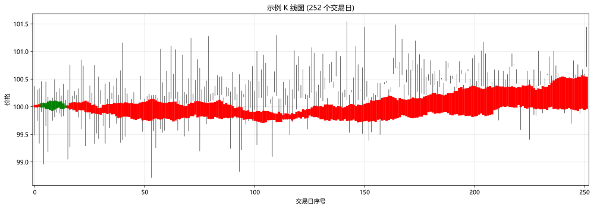
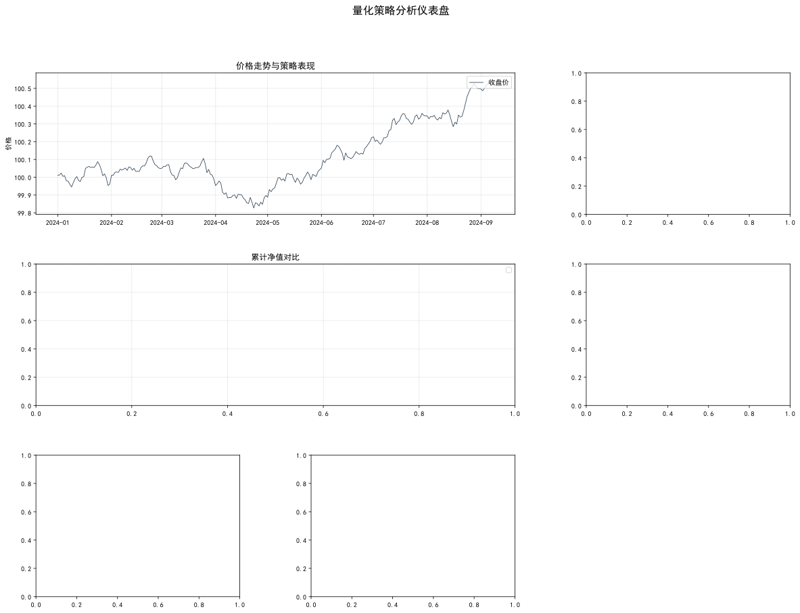
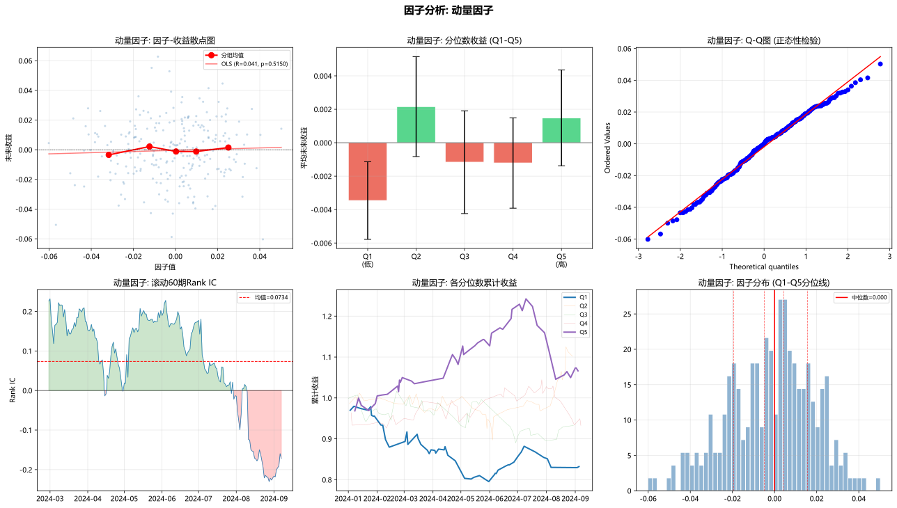

主题切换
3.5 可视化与探索
概念详解
可视化在量化中的多重角色
可视化远不只是"画好看的图"。在量化研究中，可视化是发现规律、诊断问题和沟通结果的三合一工具。
- 探索性分析：在建模前用图表发现数据中的模式和异常。散点图矩阵、分布图、时序图是发现非线性关系、异常值和结构性突变的最快手段。
- 诊断性分析：验证模型的假设和表现。残差图、Q-Q图、参数敏感性热力图帮助判断模型是否过拟合、违反哪些假设。
- 解释性沟通：将复杂的量化结果转化为可以理解的视觉故事。策略净值曲线、因子归因瀑布图、风险预算饼图让非技术背景的投资者也能理解策略逻辑。
名词解释：K线图
展示特定周期内开盘价、收盘价、最高价、最低价的图表，红色（或空心）表示上涨，绿色（或实心）表示下跌。
名词解释：热力图 (Heatmap)
用颜色深浅表示数值大小的矩阵图表。在量化中常用于展示相关性矩阵、因子IC矩阵、参数敏感性等。
名词解释：配对图 (Pair Plot)
展示多维数据中每对变量之间关系的矩阵图，对角线常放分布直方图或核密度估计。适合快速发现变量间的线性/非线性关系。
量化可视化的常用图表类型
| 图表类型 | 适用场景 | 常用库 |
|---|---|---|
| K线图 | 价格走势与形态分析 | matplotlib/mplfinance |
| 净值曲线 | 策略表现展示 | matplotlib |
| 相关性热力图 | 因子/资产间关系 | seaborn |
| 分布直方图 | 收益率分布诊断 | matplotlib/seaborn |
| 散点图 | 双变量关系探索 | matplotlib/seaborn |
| 箱线图 | 分组统计比较 | seaborn |
| 参数热力图 | 参数敏感性分析 | seaborn |
| 滚动折线图 | 时变特征展示 | matplotlib |
| 瀑布图 | 收益归因分解 | matplotlib |
| 树状图 | 资产层次聚类 | scipy/matplotlib |
金融图表的基本原则
- 颜色有含义：红色=下跌/亏损（中国红反之），绿色=上涨/盈利。不要随意反转颜色约定
- 标注关键事件：在时间序列图上标注市场重大事件（如2015年股灾、2020年3月崩盘）
- 对数坐标：对于跨越多个数量级的价格序列，对数坐标更合理
- 诚实轴：不要通过截断Y轴来夸大差异，不要用3D效果扭曲数据
- 网格线帮助阅读：适度的网格线（alpha=0.3）提升可读性
Python实战
案例1：绘制K线
此处有展示代码展开 ▼
python
import matplotlib.pyplot as plt
# 一键运行:用 demo 数据 df['Close'/'Open'/'High'/'Low'/'Volume'] 画 K 线图
fig, ax = plt.subplots(figsize=(14, 5))
prices = df[['Open', 'High', 'Low', 'Close']].reset_index(drop=True)
for i, row in prices.iterrows():
color = 'red' if row['Close'] >= row['Open'] else 'green'
ax.plot([i, i], [row['Low'], row['High']], 'black', linewidth=0.6)
ax.plot([i, i], [row['Open'], row['Close']], color, linewidth=4)
ax.set_xlim(-1, len(prices))
ax.set_xlabel('交易日序号')
ax.set_ylabel('价格')
ax.set_title(f'示例 K 线图 ({len(prices)} 个交易日)')
ax.grid(True, alpha=0.3)
plt.tight_layout()
plt.show()
print(f"✅ K 线图已绘制 ({len(prices)} 根日K, 红涨绿跌)")点击展开可浏览运行结果
✅ K 线图已绘制 (252 根日K, 红涨绿跌)

案例2：专业量化可视化仪表盘
此处有展示代码展开 ▼
python
import matplotlib.pyplot as plt
import matplotlib.dates as mdates
import numpy as np
import pandas as pd
# 注:本案例纯 matplotlib, 不依赖 seaborn(浏览器沙箱不支持)。
from scipy import stats
from matplotlib.gridspec import GridSpec
import matplotlib.ticker as ticker
def quant_dashboard(price_data, strategy_nav=None, benchmark_nav=None,
returns=None, drawdowns=None, monthly_returns=None):
"""
创建专业的量化策略仪表盘，整合多个关键诊断图表
"""
# 设置中文字体
plt.rcParams['font.sans-serif'] = ['SimHei', 'DejaVu Sans']
plt.rcParams['axes.unicode_minus'] = False
fig = plt.figure(figsize=(20, 14))
gs = GridSpec(3, 3, figure=fig, hspace=0.35, wspace=0.35)
# === 1. 价格走势与交易信号 (占据2列) ===
ax1 = fig.add_subplot(gs[0, :2])
ax1.plot(price_data.index, price_data['Close'], linewidth=0.8, color='#2c3e50', label='收盘价')
# 如果提供了净值曲线
if strategy_nav is not None:
ax1_twin = ax1.twinx()
ax1_twin.plot(strategy_nav.index, strategy_nav.values,
linewidth=1.2, color='#e74c3c', alpha=0.8, label='策略净值')
ax1_twin.set_ylabel('策略净值', color='#e74c3c')
ax1_twin.legend(loc='upper left')
ax1.set_title('价格走势与策略表现', fontsize=13, fontweight='bold')
ax1.set_ylabel('价格')
ax1.legend(loc='upper right')
ax1.grid(True, alpha=0.3)
# === 2. 收益率分布 ===
ax2 = fig.add_subplot(gs[0, 2])
if returns is not None:
returns_clean = returns.dropna()
ax2.hist(returns_clean, bins=50, density=True, color='steelblue',
alpha=0.6, edgecolor='white')
# 叠加正态分布
x = np.linspace(returns_clean.min(), returns_clean.max(), 200)
ax2.plot(x, stats.norm.pdf(x, returns_clean.mean(), returns_clean.std()),
'r-', linewidth=2, label='正态分布')
ax2.axvline(x=0, color='black', linestyle='-', linewidth=0.5)
ax2.axvline(x=returns_clean.mean(), color='red', linestyle='--',
linewidth=1, label=f'均值={returns_clean.mean():.4f}')
ax2.set_title('收益率分布', fontsize=12, fontweight='bold')
ax2.legend(fontsize=8)
ax2.grid(True, alpha=0.3)
# === 3. 累计收益对比 ===
ax3 = fig.add_subplot(gs[1, :2])
if strategy_nav is not None:
ax3.plot(strategy_nav.index, strategy_nav.values,
linewidth=1.5, color='#e74c3c', label='策略')
if benchmark_nav is not None:
ax3.plot(benchmark_nav.index, benchmark_nav.values,
linewidth=1.5, color='#3498db', alpha=0.7, label='基准')
ax3.set_title('累计净值对比', fontsize=12, fontweight='bold')
ax3.legend()
ax3.grid(True, alpha=0.3)
ax3.axhline(y=1.0, color='black', linestyle='--', linewidth=0.5)
# === 4. 回撤曲线 ===
ax4 = fig.add_subplot(gs[1, 2])
if drawdowns is not None:
ax4.fill_between(drawdowns.index, 0, drawdowns.values * 100,
color='#e74c3c', alpha=0.5)
ax4.plot(drawdowns.index, drawdowns.values * 100,
linewidth=0.5, color='#c0392b')
max_dd = drawdowns.min() * 100
max_dd_date = drawdowns.idxmin()
ax4.axhline(y=max_dd, color='darkred', linestyle='--', linewidth=1,
label=f'最大回撤={max_dd:.1f}%')
ax4.set_title('回撤曲线', fontsize=12, fontweight='bold')
ax4.set_ylabel('回撤 (%)')
ax4.legend(fontsize=8)
ax4.grid(True, alpha=0.3)
# === 5. 月度收益热力图(纯 matplotlib,无需 seaborn) ===
ax5 = fig.add_subplot(gs[2, 0])
if monthly_returns is not None:
# 构建月度收益矩阵
if isinstance(monthly_returns, pd.Series):
monthly_returns = monthly_returns.copy()
mr = monthly_returns.values if hasattr(monthly_returns, 'values') else monthly_returns
nrows, ncols = mr.shape
im5 = ax5.imshow(mr, cmap='RdYlGn', aspect='equal')
# 写百分比注释
for i in range(nrows):
for j in range(ncols):
v = mr[i, j]
color = 'white' if abs(v) > 0.05 else 'black'
ax5.text(j, i, f'{v:.1%}', ha='center', va='center',
color=color, fontsize=7)
# 行/列标签(若是 DataFrame)
if hasattr(monthly_returns, 'columns'):
ax5.set_xticks(range(ncols))
ax5.set_xticklabels(monthly_returns.columns, fontsize=7, rotation=0)
if hasattr(monthly_returns, 'index'):
ax5.set_yticks(range(nrows))
ax5.set_yticklabels(monthly_returns.index, fontsize=7)
ax5.set_title('月度收益热力图 (%)', fontsize=12, fontweight='bold')
# === 6. 滚动指标 ===
ax6 = fig.add_subplot(gs[2, 1])
if returns is not None:
window = min(60, len(returns) // 5)
rolling_sharpe = returns.rolling(window).mean() / returns.rolling(window).std() * np.sqrt(252)
rolling_vol = returns.rolling(window).std() * np.sqrt(252)
ax6.plot(rolling_sharpe.index, rolling_sharpe.values,
linewidth=0.8, color='#2ecc71', label=f'滚动夏普 ({window}日)')
ax6.axhline(y=0, color='black', linestyle='-', linewidth=0.5)
ax6.set_title('滚动夏普比率', fontsize=12, fontweight='bold')
ax6.legend(fontsize=8)
ax6.grid(True, alpha=0.3)
# === 7. 关键统计指标 ===
ax7 = fig.add_subplot(gs[2, 2])
ax7.axis('off')
if returns is not None:
returns_clean = returns.dropna()
stats_text = f"""
策略统计摘要
{'─' * 30}
年化收益率: {returns_clean.mean()*252:>8.2%}
年化波动率: {returns_clean.std()*np.sqrt(252):>8.2%}
夏普比率: {(returns_clean.mean()/returns_clean.std())*np.sqrt(252):>8.2f}
最大回撤: {drawdowns.min():>8.2%}
胜率: {(returns_clean>0).mean():>8.1%}
盈亏比: {abs(returns_clean[returns_clean>0].mean()/returns_clean[returns_clean<0].mean()):>8.2f}
偏度: {stats.skew(returns_clean):>8.2f}
超额峰度: {stats.kurtosis(returns_clean):>8.2f}
Calmar比率: {(returns_clean.mean()*252)/abs(drawdowns.min()):>8.2f}
"""
ax7.text(0.05, 0.95, stats_text, transform=ax7.transAxes,
fontsize=10, fontfamily='monospace', verticalalignment='top',
bbox=dict(boxstyle='round', facecolor='wheat', alpha=0.3))
fig.suptitle('量化策略分析仪表盘', fontsize=16, fontweight='bold', y=0.98)
plt.tight_layout()
plt.show()
return fig
# 一键运行(用 demo 数据构造完整的策略分析面板)
_np.random.seed(11)
_strategy_rets = pd.Series(df['returns'] * signal[:-1], index=df.index).iloc[1:]
_strategy_nav = (1 + _strategy_rets).cumprod()
_bench_nav = (1 + df['returns']).cumprod()
_drawdowns = _strategy_nav / _strategy_nav.cummax() - 1
_monthly = _strategy_rets.resample('B').sum().resample('ME').sum().to_frame('ret')
_monthly['year'] = _monthly.index.year
_monthly['month'] = _monthly.index.month
_monthly_pivot = _monthly.pivot(index='year', columns='month', values='ret').fillna(0)
quant_dashboard(
price_data=df[['Close']],
strategy_nav=_strategy_nav,
benchmark_nav=_bench_nav,
returns=_strategy_rets,
drawdowns=_drawdowns,
monthly_returns=_monthly_pivot
)
print(f"\n✅ 仪表盘已生成:价格走势 / 收益分布 / 净值对比 / 回撤 / 月度热图 / 滚动夏普 / 关键统计")点击展开可浏览运行结果

📘 本段代码定义了 1 个函数/类：函数 `quant_dashboard`（创建专业的量化策略仪表盘，整合多个关键诊断图表）。该片段为教学展示（未包含独立运行的输入数据），可在实战练习中结合真实数据调用。
案例3：因子分析可视化工具箱
此处有展示代码展开 ▼
python
import matplotlib.pyplot as plt
# 注:本案例纯 matplotlib + scipy, 不依赖 seaborn(浏览器沙箱不支持)。
import numpy as np
import pandas as pd
from scipy import stats
def factor_analysis_viz(factor_values, forward_returns, factor_name='Factor',
n_quantiles=5, periods=None):
"""
因子分析可视化套件
factor_values: Series, 每期的因子值
forward_returns: Series, 对应的未来一期收益率
"""
# 对齐数据
data = pd.DataFrame({
'factor': factor_values,
'fwd_return': forward_returns
}).dropna()
fig, axes = plt.subplots(2, 3, figsize=(18, 10))
# === 1. 散点图+回归线 ===
axes[0, 0].scatter(data['factor'], data['fwd_return'],
alpha=0.3, s=10, c='steelblue', edgecolors='none')
# 添加分组均值线
data['quantile'] = pd.qcut(data['factor'], n_quantiles, labels=False, duplicates='drop')
group_means = data.groupby('quantile')[['factor', 'fwd_return']].mean()
axes[0, 0].plot(group_means['factor'], group_means['fwd_return'],
'ro-', linewidth=2, markersize=8, label='分组均值')
# OLS回归线
slope, intercept, r_value, p_value, _ = stats.linregress(data['factor'], data['fwd_return'])
x_range = np.linspace(data['factor'].min(), data['factor'].max(), 100)
axes[0, 0].plot(x_range, intercept + slope * x_range, 'r-', linewidth=1.5,
alpha=0.5, label=f'OLS (R={r_value:.3f}, p={p_value:.4f})')
axes[0, 0].axhline(y=0, color='black', linewidth=0.5, linestyle='--')
axes[0, 0].set_xlabel('因子值')
axes[0, 0].set_ylabel('未来收益')
axes[0, 0].set_title(f'{factor_name}: 因子-收益散点图')
axes[0, 0].legend(fontsize=8)
axes[0, 0].grid(True, alpha=0.3)
# === 2. 分位数收益柱状图 ===
quantile_returns = data.groupby('quantile')['fwd_return'].mean()
quantile_std = data.groupby('quantile')['fwd_return'].std() / np.sqrt(data.groupby('quantile').size())
colors_bar = ['#e74c3c' if x < 0 else '#2ecc71' for x in quantile_returns]
axes[0, 1].bar(range(len(quantile_returns)), quantile_returns.values,
color=colors_bar, edgecolor='white', yerr=quantile_std.values,
capsize=5, alpha=0.8)
axes[0, 1].axhline(y=0, color='black', linewidth=0.5)
axes[0, 1].set_xticks(range(len(quantile_returns)))
axes[0, 1].set_xticklabels([f'Q{i+1}\n(低)' if i==0 else f'Q{i+1}\n(高)' if i==len(quantile_returns)-1 else f'Q{i+1}'
for i in range(len(quantile_returns))])
axes[0, 1].set_ylabel('平均未来收益')
axes[0, 1].set_title(f'{factor_name}: 分位数收益 (Q1-Q{n_quantiles})')
axes[0, 1].grid(True, alpha=0.3)
# === 3. Q-Q图 (因子值分布) ===
stats.probplot(data['factor'], dist='norm', plot=axes[0, 2])
axes[0, 2].set_title(f'{factor_name}: Q-Q图 (正态性检验)')
axes[0, 2].grid(True, alpha=0.3)
# === 4. 因子IC序列 (滚动) ===
# 计算滚动Rank IC
if len(data) > 60:
rolling_ic = data['factor'].rolling(60).corr(data['fwd_return']) # 默认 Pearson;若需 Spearman 改用 rolling(60).apply(lambda x: x.corr(x, method='spearman'))
axes[1, 0].plot(rolling_ic.index, rolling_ic.values, linewidth=0.8, color='#2980b9')
axes[1, 0].axhline(y=0, color='black', linewidth=0.5)
axes[1, 0].axhline(y=rolling_ic.mean(), color='red', linestyle='--', linewidth=1,
label=f'均值={rolling_ic.mean():.4f}')
axes[1, 0].fill_between(rolling_ic.index, 0, rolling_ic.values,
where=rolling_ic.values > 0, color='green', alpha=0.2)
axes[1, 0].fill_between(rolling_ic.index, 0, rolling_ic.values,
where=rolling_ic.values < 0, color='red', alpha=0.2)
axes[1, 0].set_title(f'{factor_name}: 滚动60期Rank IC')
axes[1, 0].set_ylabel('Rank IC')
axes[1, 0].legend(fontsize=8)
axes[1, 0].grid(True, alpha=0.3)
# === 5. 累积分位数收益 ===
# 计算每个分位数的累计收益
cum_returns = {}
for q in sorted(data['quantile'].unique()):
mask = data['quantile'] == q
cum_rets = (1 + data.loc[mask, 'fwd_return'].sort_index()).cumprod()
cum_returns[q] = cum_rets
# 使用热力图展示不同时期的分位数收益
if 'date' in data.columns:
pass # 可以用seaborn heatmap展示时间序列
for q, cum_ret in cum_returns.items():
label = f'Q{q+1}'
alpha_val = 1.0 if q in [0, len(cum_returns)-1] else 0.3
linewidth = 2 if q in [0, len(cum_returns)-1] else 0.5
axes[1, 1].plot(cum_ret.index, cum_ret.values, linewidth=linewidth,
alpha=alpha_val, label=label)
axes[1, 1].set_title(f'{factor_name}: 各分位数累计收益')
axes[1, 1].set_ylabel('累计收益')
axes[1, 1].legend(fontsize=8)
axes[1, 1].grid(True, alpha=0.3)
# === 6. 因子分布 + 分组边界 ===
axes[1, 2].hist(data['factor'], bins=50, density=True, color='steelblue',
alpha=0.6, edgecolor='white')
# 标注分位数边界
for q in range(1, n_quantiles):
boundary = data['factor'].quantile(q / n_quantiles)
axes[1, 2].axvline(x=boundary, color='red', linestyle='--',
linewidth=0.8, alpha=0.6)
axes[1, 2].axvline(x=data['factor'].median(), color='red', linewidth=1.5,
label=f'中位数={data["factor"].median():.3f}')
axes[1, 2].set_title(f'{factor_name}: 因子分布 (Q1-Q{n_quantiles}分位线)')
axes[1, 2].legend(fontsize=8)
axes[1, 2].grid(True, alpha=0.3)
# 总标题
fig.suptitle(f'因子分析: {factor_name}', fontsize=15, fontweight='bold', y=1.01)
plt.tight_layout()
plt.show()
# 输出统计信息
print("=" * 50)
print(f"因子分析: {factor_name}")
print("=" * 50)
print(f"样本量: {len(data)}")
print(f"Rank IC: {data['factor'].corr(data['fwd_return'], method='spearman'):.4f}")
print(f"OLS斜率: {slope:.6f}, R={r_value:.4f}, p={p_value:.4f}")
print(f"Q1-Q{n_quantiles} 超额收益: {quantile_returns.iloc[-1] - quantile_returns.iloc[0]:.6f}")
# 单调性检验
mono_violations = np.sum(np.diff(quantile_returns.values) <= 0)
print(f"分位数收益单调性违规数: {mono_violations}/{n_quantiles-1} (越低越好)")
return {
'rank_ic': data['factor'].corr(data['fwd_return'], method='spearman'),
'ols_r': r_value, 'ols_p': p_value,
'quantile_returns': quantile_returns,
'long_short_spread': quantile_returns.iloc[-1] - quantile_returns.iloc[0]
}
# 一键运行(用 demo 数据: factors 每列分别作为单独因子做分析)
result_momentum = factor_analysis_viz(
factor_values=factors['momentum'],
forward_returns=df['returns'].shift(-1).dropna(),
factor_name='动量因子'
)
print(f"\n✅ 多空价差: {result_momentum['long_short_spread']:.4%} (rank IC: {result_momentum['rank_ic']:.3f})")点击展开可浏览运行结果
================================================== 因子分析: 动量因子 ================================================== 样本量: 251 Rank IC: 0.0497 OLS斜率: 0.040059, R=0.0413, p=0.5150 Q1-Q5 超额收益: 0.004943 分位数收益单调性违规数: 2/4 (越低越好) ✅ 多空价差: 0.4943% (rank IC: 0.050)

常见误区
误区一：可视化只是"锦上添花"
事实：可视化往往是发现数据问题最有效的手段。一个Q-Q图可以在10秒内揭示偏离正态的程度，一个滚动IC图可以立即展示因子稳定性的变化。很多在做统计检验时被忽略的问题，在图上是一目了然的。
误区二：图表越花哨越好
事实：Tufte的"数据-墨水比"原则（Data-Ink Ratio）指出：图表中的墨水和像素应该主要用于展示数据，而非装饰。3D效果、过多的颜色渐变、不必要的动画——这些"图表垃圾 (chartjunk)"只会分散注意力。
误区三：默认设置就可以了
事实：matplotlib/seaborn的默认设置在金融场景下通常不合适：
- 默认颜色在打印时难以区分
- 没有对时间序列做特殊处理
- x轴标签在日期密集时会重叠
专业的金融图表需要定制：颜色方案、日期格式化、对数坐标轴、事件标注等等。
误区四：一张图能包含所有信息
事实：单一图表的信息量有限。好的量化可视化通常是多图联动的仪表盘，每张图表回答一个特定问题：回撤多大？收益分布如何？因子稳定性怎样？一张"综合图"试图回答所有问题，结果往往是哪个问题也没回答清楚。
实战练习
策略仪表盘：用你手上的一项策略回测数据，模仿quant_dashboard函数创建一个完整的分析仪表盘。确保包含：净值曲线、回撤曲线、收益分布直方图、月度收益热力图和关键统计指标。
因子可视化：取一个你感兴趣的量化因子（如20日反转、60日动量或换手率），使用factor_analysis_viz框架进行可视化分析。重点观察：(a) 因子值的分布是否正态，(b) 因子和未来收益的关系是否线性，(c) 分位数收益是否单调，(d) 滚动IC是否稳定。
交互式可视化：使用plotly库重新实现一个交互式的策略净值对比图，包含缩放、悬停提示和时间区间选择功能。比较静态图表和交互式图表在探索数据时的效率和体验差异。plotly需要
pip install plotly。
延伸阅读
- 《The Visual Display of Quantitative Information》—— Edward Tufte，信息可视化的圣经
- 《Storytelling with Data》—— Cole Nussbaumer Knaflic，数据叙事的实践指南
- matplotlib官方图库 (matplotlib.org/gallery) —— 大量可直接参考的代码示例
- 《Python Data Science Handbook》—— Jake VanderPlas，第4章matplotlib深入讲解
- Plotly官方文档 —— 交互式金融可视化的最佳选择
本章要点
- 可视化在量化中扮演探索、诊断和沟通三重角色，不是可有可无的装饰
- matploblib+seaborn是Python可视化的基础组合，plotly适合交互式分析
- 仪表盘式多图联动比单张大图更有洞察力，每张图回答一个特定问题
- 金融图表的颜色、标注、坐标轴需要专门定制，默认设置通常不够
- 可视化首先服务于分析者自己（发现问题），其次才服务于观众（表达结果）